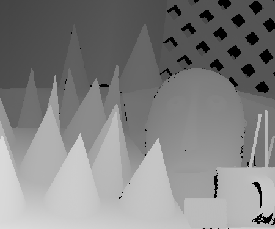
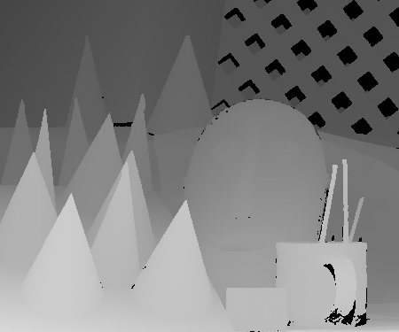
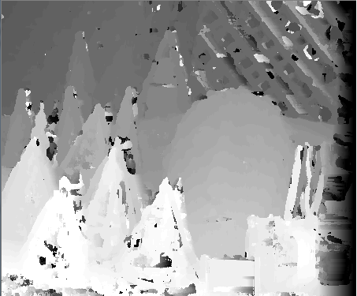

Problem Definition
Stereo matching, the extraction of depth information from digital images, is one of the most heavily investigated topics in computer vision with many applications in entertainment, object recognition,information transfer, and automated systems. In this project, we want to implement a stereo matching algorithm. The baseline approach is through the traditional block matching algorithm. Our goal is to explore an improved method for detecting objects in stereo images and calculating a more accurate correspondence between two images. We plan on initially utilizing the middlebury dataset, of two-frame stereo images, because it provides us high quality ground truth images and calibration data. Additionally, we plan on exploring filtering methods for both de-noising and hole-filling in depth maps. To challenge ourselves, we want to extend the algorithm to non-parallel camera settings for example the bats over the lake.
Dataset and Desired Results
We get our datasets from the website: http://vision.middlebury.edu/stereo/
1. Middlebury dataset
Left view:

Right view:

2. Desired results
Left view ground truth: 
Right view ground truth: 
Background Research and Methods
Step 1. Read stereo image pair
For this step we will read in the color stereo image pair and convert the images to grayscale for the matching process. Using color images may provide some improvement in accuracy, but it is more efficient to work with only onechannel images. For this we will use the ImageDataTypeConverter and the ColorSpaceConverter System objects.
Step 2. Basic block matching
Next we will perform basic block matching. For every pixel in the right image, we extract the 7-by-7 pixel block around it and search along the same row in the left image for the block that best matches it. Here we search in a range of ±15 pixels around the pixel's location in the first image, and we use the sum of absolute differences (SAD) to compare the image regions. We need only search over columns and not over rows because the images are rectified. We will use the TemplateMatcher System object to perform this block matching between each block and the region of interest.
Disparity map from basic block matching: Using search range 50 and block size 7. 
There could be noisy patches and bad depth estimates everywhere, especially on the ceiling. These are caused when no strong image features appear inside of the 7-by-7 pixel windows being compared. Then the matching process is subject to noise since each pixel chooses its disparity independently of all the other pixels.
For display purposes, we saturate the depth map to have only positive values. In general, slight angular misalignment of the stereo cameras used for image acquisition can allow both positive and negative disparities to appear validly in the depth map. In this case, however, the stereo cameras were near perfectly parallel, so the true disparities have only one sign. Thus this correction is valid.
Step 3. Subpixel estimation
The disparity estimates returned by block matching are all integervalued, so the above depth map exhibits contouring effects where there are no smooth transitions between regions of different disparity. This can be ameliorated by incorporating subpixel computation into the matching metric. Previously we only took the location of the minimum cost as the disparity, but now we take into consideration the minimum cost and the two neighboring cost values. We fit a parabola to these three values, and analytically solve for the minimum to get the sub pixel correction.
Step 4. Dynamic programming
As mentioned above, basic block matching creates a noisy disparity image. This can be improved by introducing a smoothness constraint. Basic block matching chooses the optimal disparity for each pixel based on its own cost function alone. Now we want to allow a pixel to have a disparity with possibly suboptimal cost for it locally. This extra cost must be offset by increasing that pixel's agreement in disparity with its neighbors. In particular, we constrain each disparity estimate to lie with ±3 values of its neighbors' disparities, where its neighbors are the adjacent pixels along an image row. The problem of finding the optimal disparity estimates for a row of pixels now becomes one of finding the "optimal path" from one side of the image to the other. To find this optimal path, we use the underlying block matching metric as the cost function and constrain the disparities to only change by a certain amount between adjacent pixels. This is a problem that can be solved efficiently using the technique of dynamic programming.
Step 5. Image Pyramiding
While dynamic programming can improve the accuracy of the stereo image, basic block matching is still an expensive operation, and dynamic programming only adds to the burden. One solution is to use image pyramiding and telescopic search to guide the block matching. With the fullsize image, we had to search over a ±15-pixel range to properly detect the disparities in the image. If we had downsized the image by a factor of two, however, this search could have been reduced to ±7 pixels on an image a quarter of the area, meaning this step would cost a factor of 8 less. Then we use the disparity estimates from this downsized operation to seed the search on the larger image, and therefore we only need to search over a smaller range of disparities.
Step 6. Combined pyramiding and dynamic programming
Finally we will merge the above techniques and run dynamic programming along with image pyramiding, where the dynamic programming is run on the disparity estimates output by every pyramid level. The results compare well with the highestquality results we have obtained so far, and are still achieved at a reduced computational burden versus basic block matching.
It is also possible to use sub-pixel methods with dynamic programming. As before, sub-pixeling reduces contouring effects and clearly improves accuracy.
Credits and Bibliography
Teammates: Tigran Melkonian, Mingrui Yang, Wei Jiang.